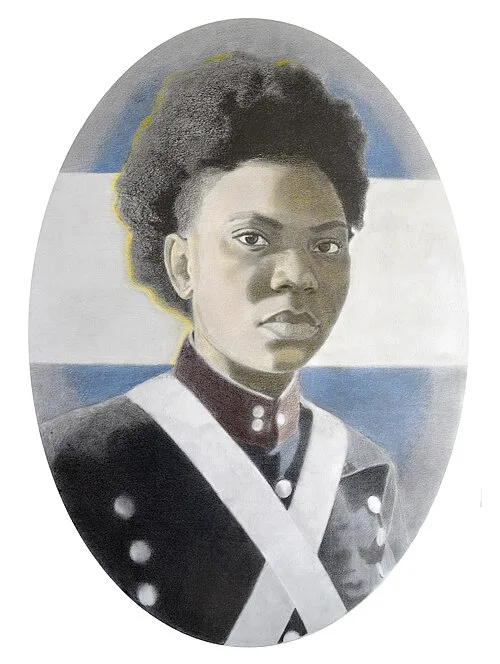

María Remedios del Valle
Buenos Aires, c. 1766 – Buenos Aires, 8 de noviembre de 1847
Mujer afroargentina que acompañó al Ejército del Norte como enfermera, auxiliar y combatiente. Manuel Belgrano la reconoció con el grado de capitana.
← Volver a Heroínas
Presentación
María Remedios del Valle nació en Buenos Aires hacia 1766. Actuó principalmente en el norte del actual territorio argentino, integrando el Ejército del Norte durante las campañas dirigidas por Manuel Belgrano. Desempeñó un papel doble, poco frecuente para una mujer de su época: se ocupó de asistir a los heridos como enfermera y auxiliar, y también combatió directamente en el frente de batalla. Es una figura fundamental de la independencia argentina porque su participación fue directa y sostenida a lo largo de varias campañas clave, porque sobrevivió a heridas, capturas y castigos sin abandonar al ejército patriota, y porque su historia permite recuperar la participación afroargentina, largamente invisibilizada, en la construcción de la independencia nacional.

Logros destacados
Reconocida como capitana
Manuel Belgrano la distinguió con el grado de capitana en reconocimiento a su valentía.
Ejército del Norte
Participó en las campañas del Ejército del Norte como enfermera, auxiliar y combatiente.
Sobrevivió a la guerra
Sobrevivió a heridas, capturas y castigos sin abandonar la causa patriota.
"La Madre de la Patria"
Es conocida con ese nombre y tiene una fecha nacional en su honor: el 8 de noviembre.
Su aporte a la independencia argentina y sudamericana
Las luchas independentistas de América del Sur estuvieron conectadas entre sí. Aunque algunas de estas mujeres no actuaron directamente en el actual territorio argentino, sus acciones contribuyeron a debilitar el dominio español y a fortalecer la emancipación del continente. De esta manera, también favorecieron, directa o indirectamente, la consolidación de la independencia argentina.
Aporte directo- Integró el Ejército del Norte.
- Participó en campañas y batallas clave.
- Atendió heridos y también combatió.
- Acompañó acciones militares fundamentales para la defensa del territorio.
- Su participación fue directa dentro del proceso de independencia de las Provincias Unidas.
Ideas
Los valores que representó a lo largo de su participación:
- Defendió la libertad y la independencia de las Provincias Unidas.
- Representó el compromiso con la patria más allá del origen social o étnico.
- Su historia expresa valores de igualdad, sacrificio y solidaridad.
Acciones
Lo que hizo, concretamente, en las campañas del Ejército del Norte:
- Participó en las campañas del Ejército del Norte.
- Asistió a soldados heridos.
- Combatió en distintas batallas.
- Participó en el Éxodo Jujeño y en las batallas de Tucumán, Vilcapugio y Ayohuma.
- Fue herida y capturada por los realistas.
- Manuel Belgrano la reconoció con el grado de capitana.
Legado
Cómo es recordada y por qué continúa siendo una figura fundamental:
- Es conocida como "La Madre de la Patria".
- Su figura permitió recuperar la participación afroargentina en la historia nacional.
- En su honor, el 8 de noviembre se conmemora el Día Nacional de los Afroargentinos y de la Cultura Afro.
Línea de tiempo de María Remedios del Valle
-
c. 1766
Nacimiento. Nace en Buenos Aires.
-
1810-1812
Se incorpora al Ejército del Norte. Comienza a acompañar las campañas como enfermera y auxiliar.
-
1812
Éxodo Jujeño. Participa en el Éxodo Jujeño y en la batalla de Tucumán.
-
1813
Salta, Vilcapugio y Ayohuma. Combate en estas batallas; es herida y capturada por los realistas.
-
Campañas del Ejército del Norte
Reconocimiento de Belgrano. Manuel Belgrano la distingue con el grado de capitana.
-
1847
Muerte. Fallece en Buenos Aires; décadas después el Estado argentino reconocería su figura.
Su historia representa a los sectores populares y afrodescendientes que lucharon por la independencia.